Menu landing

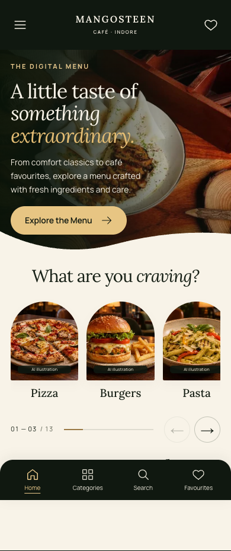
Targeted digital-menu refinement. Homepage, main navigation, burger animation, reservation design, backend and menu data are preserved.
All existing 131 dishes and 13 categories retained. Website entry remains browse-only; My List and ordering screenshots use Table 4 QR context. Generated images retain AI illustration disclosures; five references remain labelled. No verified dish-photograph matches or dietary metadata were available, so no replacements or dietary claims were invented. Full-page screenshots can show fixed navigation over content at the capture viewport; the gallery capture shows the full scrolled gallery.

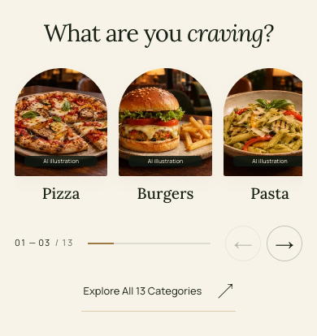
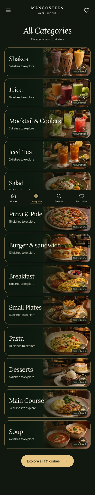
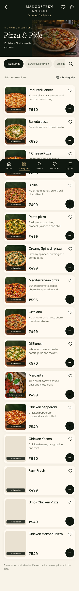
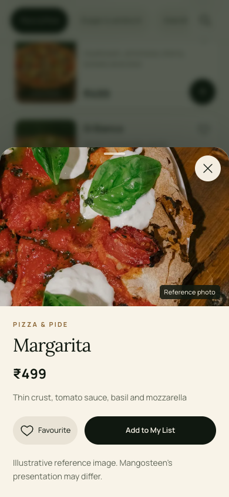
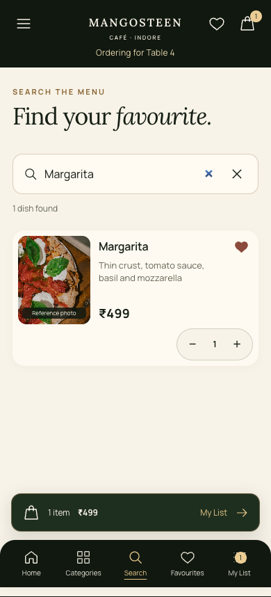
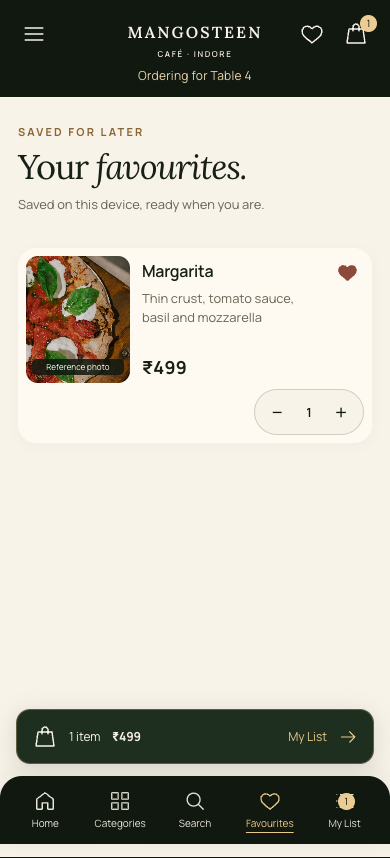
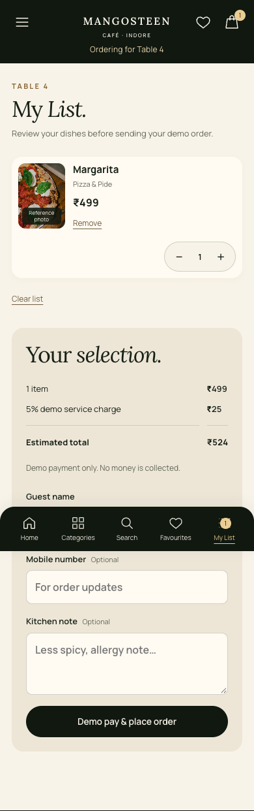
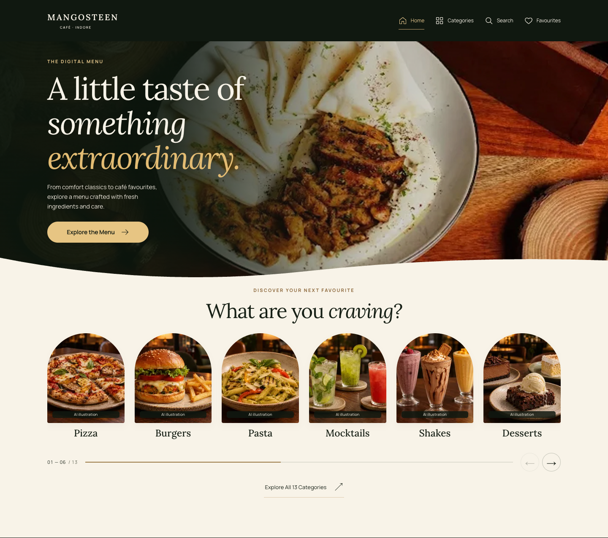
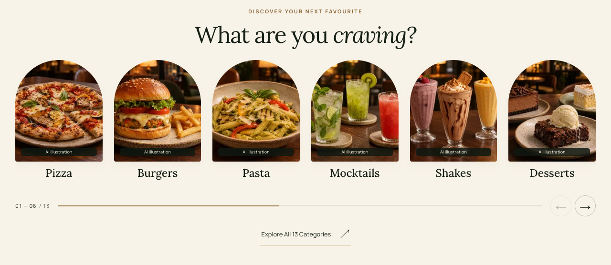
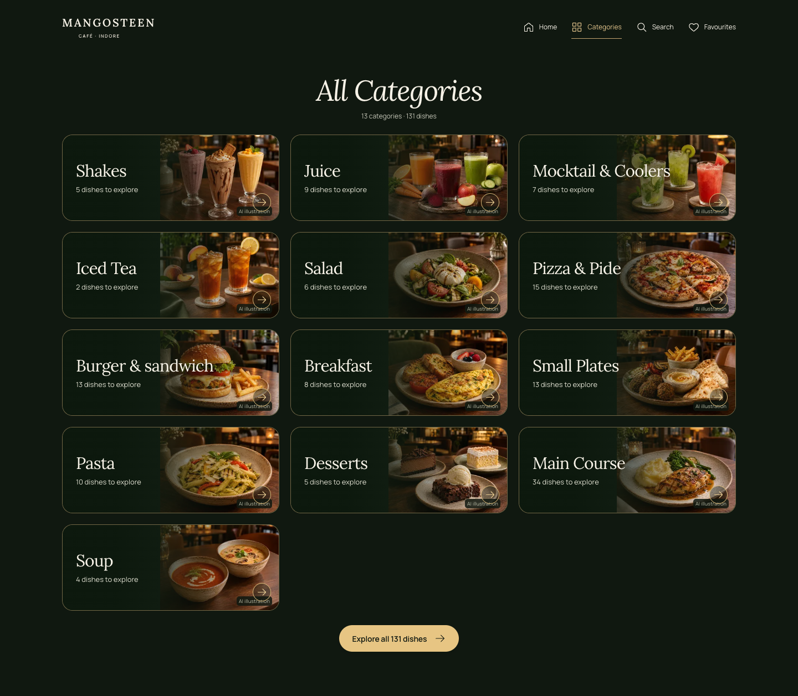
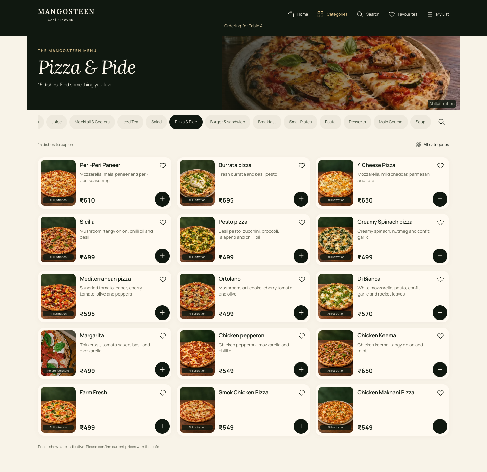
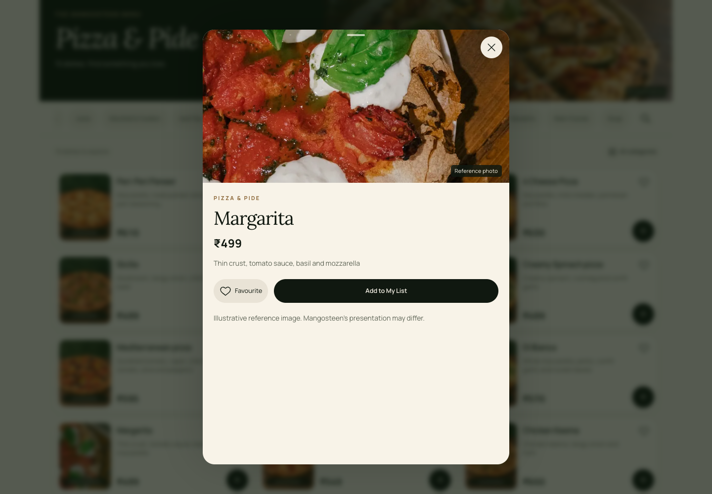
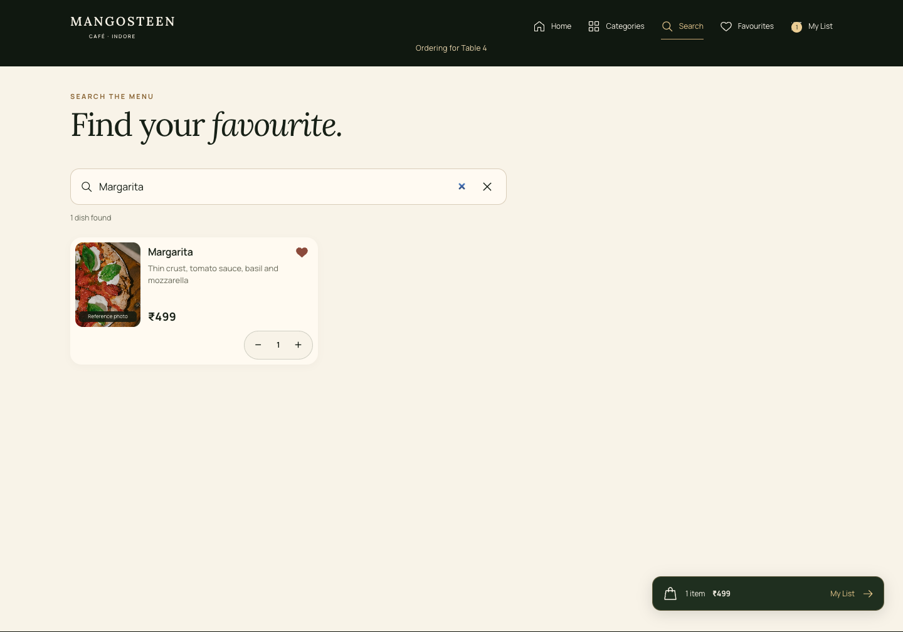
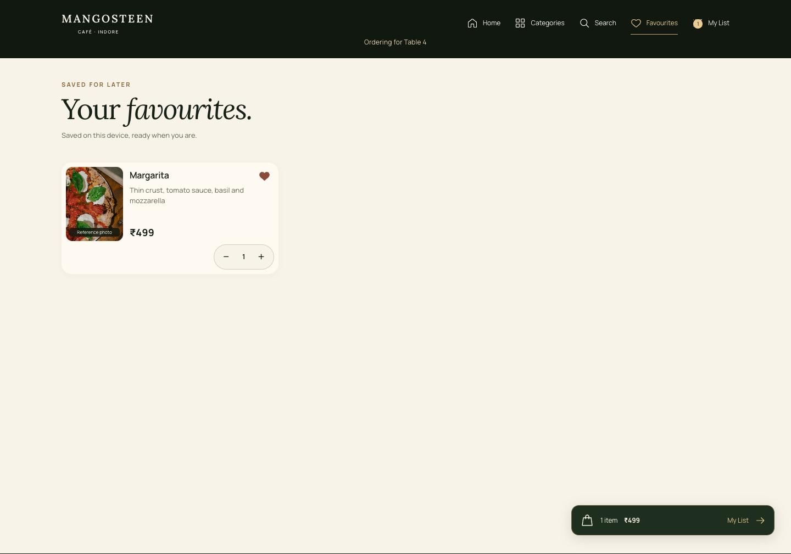
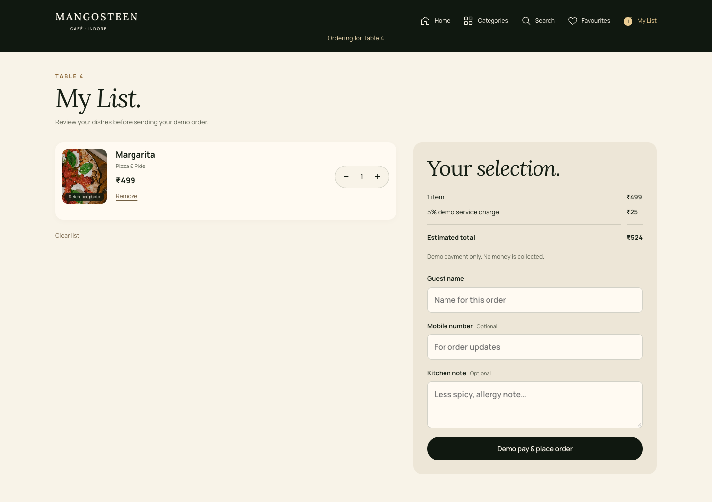
Chrome desktop and emulated mobile/tablet viewports, including all requested phone widths from 320 to 430px. Native touch events, mouse dragging, keyboard access, browser back, saved favourites, My List and disposable-CRM ordering/reservation submissions are exercised. Emulation is not physical-device Safari testing.
Production preview: mobile 390 × 844, DPR 2, 4× CPU slowdown, 6 Mbps down and 80 ms latency, three cold runs per entry mode. Median LCP: 780 ms for landing / 1136 ms for QR; CLS below 0.001; initial transfer approximately 761 KiB / 932 KiB. Synthetic scrolling p95 frame interval: 16.7 ms. Lab results only.
Local inspection: /menu · Table 4 QR. No deployment performed.